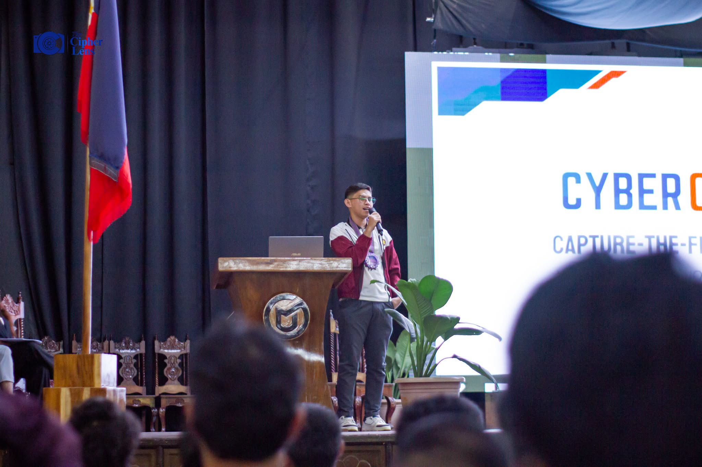

Java, Python, Perl Secure Titles in CISC Days 2026 Technical Competition
House of Java, Python, and Perl claimed championship titles in Prompt Pulse,
BotBuild, and Cyberconnect: Capture the Flag, respectively, during the second day of CISC Days 2026.
The event featured academic, technical,and recreational competitions
that showcased students' skills and teamwork.

Beyond the Flag: Three Speakers Bring Cybersecurity Lessons to CISC Days 2026
Three guest speakers discussed cybersecurity, digital forensics,
and ethical hacking during the opening-day seminar of CISC Days 2026.
The seminar prepared students for the Capture the Flag Competition.